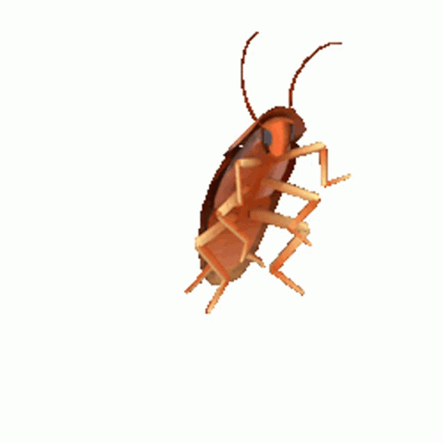
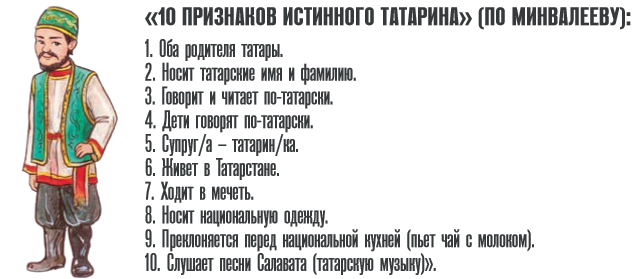
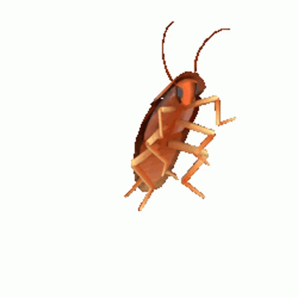
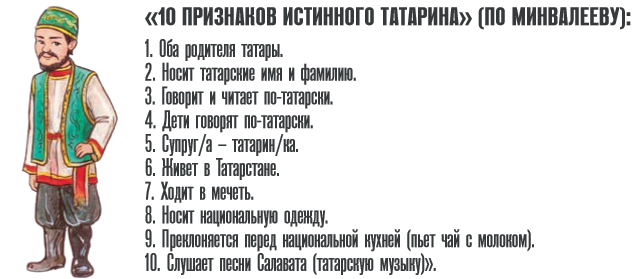

А теста то нет
а может он и не появится
привет общажникам
cfvsq nfnfhcrbq 'xgjxvfr
слава ссср

а может он и не появится
привет общажникам
cfvsq nfnfhcrbq 'xgjxvfr
слава ссср
полезные и не очень ссылки
| 1 | 2 | 3 |
| 4 | 5 | репозиторий |
| тутуту | доп материалы | секретная кнопочка |